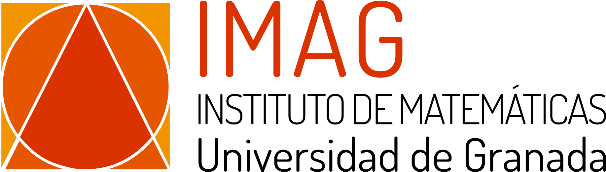

This is the second edition of regular conferences organized by the main staff of the Iberoamerican Webminar of Young Researchers in Singularity Theory and related topics. The event will be held at Instituto de Matemáticas Universidad de Granada in the beautiful city of Granada from 6 to 10 of November 2023.
It aims to be an international meeting place for both young and senior researchers in Singularity theory, where some of the recent topics in the theory are addressed in detail through courses and various specialized talks in a highly stimulating environment. From now on, this will be a face-to-face event.
This year, the event will be focus on Hodge structures and Mirror symmetry.
Hodge structures are one of the most important objects in the study of analytic and topological invariants in Singularity theory. One of the main attractions of Hodge structures is its transversal place in the theory of singularities, which makes it an important object of study from both purely algebraic techniques and more geometric techniques.
Mirror symmetry is a proposed duality between symplectic geometry and complex geometry. It has led to many new insights and discoveries in both fields and has opened up new avenues for research. Additionally, it has connections to other areas of mathematics such as algebraic geometry (enumerative geometry, for example) and number theory, making it a rich and active area of research.
Patricio Almirón-Cuadros(Univ. de Granada)
|
Pablo Portilla-Cuadrado(Univ. de Lille)
|
Juan Viu-Sos(Univ. Politécnica de Madrid)
|
Javier Fernandez de Bobadilla(Basque Center for Applied Mathematics)
|
|  | |
|
|
|